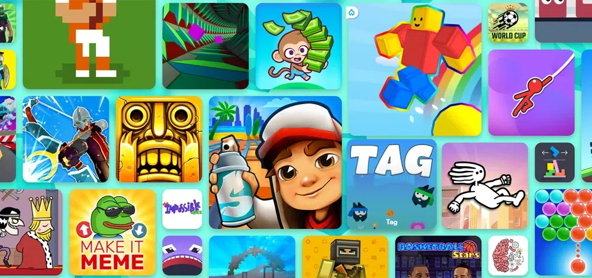

Overview
In games, rules are at the core of the player experience. They shape how we interact with the game world, define the challenges, and ultimately determine the sense of satisfaction the game brings us. In my opinion, the most important rule in game design is to strike a balance between freedom and structure. This balance plays a vital role in crafting engaging gameplay and is particularly relevant when considering ludology, narratology, and user experience (UX).

(Source: GeeksforGeeks, n.d., GeeksforGeeks, Available at: https://www.geeksforgeeks.org/top-10-free-ipad-games/)
Why is rule important?
Freedom allows players to explore, make choices, and feel in control of their experience, while structure ensures that the game remains coherent, challenging, and has clear goals. When a game leans too far in either direction, being too free or too rigid, it risks alienating players. Finding the right balance is particularly important for appealing to a diverse range of player motivations and keeping them engaged from start to finish (Juul, 2005).
Ludology, which examines games as rule-based systems, emphasises the importance of structured mechanisms in maintaining fairness and challenge. For example, in “The Legend of Zelda: Breath of the Wild”, players can freely explore a vast open world. However, the game incorporates some carefully designed rules, such as stamina limits and weapon durability, which add structure to the exploration. These rules prevent players from becoming too powerful too soon, thus ensuring the game’s progressive challenges and sustained enjoyment. Without these limitations, the gameplay would lose its tension, and the sense of satisfaction from overcoming challenges would also disappear. Ludology teaches us that even in games with open-ended gameplay, well-designed rules are crucial for keeping players engaged (Salen and Zimmerman, 2004).
From a narratological perspective, freedom is an essential part of players’ experience of and shaping of the story. For example, games like “The Witcher 3: Wild Hunt” allow players to make choices that influence the direction of the narrative. This sense of choice gives players more control over and a greater sense of belonging to the story (Jenkins, 2004). However, these games also impose rules and restrictions. For instance, the branching narrative guides players into specific storylines, ensuring a coherent and emotionally impactful experience. This balance ensures the coherence and emotional impact of the story. If players had complete freedom without narrative structure, the story could become fragmented or lose its emotional resonance. Narratology emphasizes that rules are crucial for guiding players through a meaningful story while also allowing their choices to have an impact (Herman, 2009).
From the perspective of user experience, the balance between freedom and structure is crucial for creating a satisfying and intuitive experience. For example, “Minecraft” showcases a high degree of freedom by allowing players to build and explore at will, while also offering structured gameplay modes such as Survival Mode. In this mode, players must face challenges like resource management and enemy attacks. This structure encourages players to set goals and engage deeply with the game world (McCarthy & Wright, 2004). Good user experience design also ensures that the balance between freedom and structure is clearly communicated. Tutorials, visual cues, and feedback systems help players understand what they can and cannot do, thereby reducing frustration and enhancing immersion.
In games, rules are not just restrictions; they are also tools for shaping the player’s journey. The balance between freedom and structure is a particularly important rule because it both empowers players with autonomy and provides a coherent and engaging experience. Whether from the perspectives of ludology, narratology, or user experience, this balance defines how players interact with and remember a game.
Bibliography
• Juul, J. (2005) Half-Real: Video Games between Real Rules and Fictional Worlds, MIT Press.
• Salen, K. and Zimmerman, E. (2004) Rules of Play: Game Design Fundamentals, MIT Press.
• Herman, D. (2009) Basic Elements of Narrative, Wiley-Blackwell.
• Jenkins, H. (2004) Game Design as Narrative Architecture, in: Wardrip-Fruin, N. and Harrigan, P. (eds.) First Person: New Media as Story, Performance, and Game. MIT Press, pp. 118-130.
• McCarthy, J. and Wright, P. (2004) Technology as Experience, MIT Press.
• GeeksforGeeks (n.d.) ‘Top 10 Free iPad Games’, GeeksforGeeks. Available at: https://www.geeksforgeeks.org/top-10-free-ipad-games/ (Accessed: 12 January 2025).